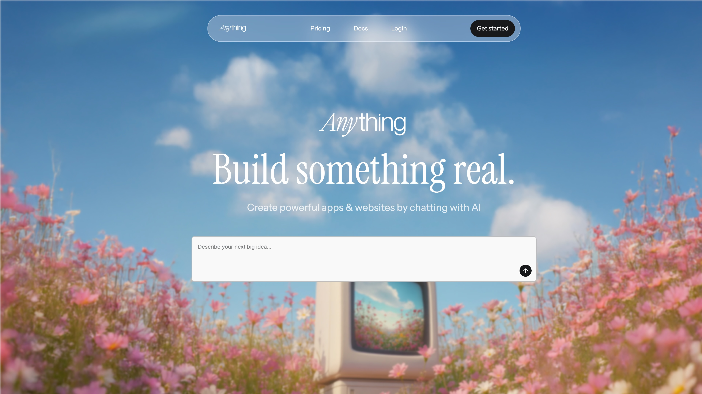

|
Site Menu
Project Info
Title: Signal Desk Type: AI product / editorial workspace Focus: Product implementation, content workflows, and AI-assisted interface design At A Glance
Alex Rowan React, TypeScript, design systems, workflow UI 2026 Quick Links
|
Signal DeskA publishing workspace shaped around structured collaboration, editorial clarity, and careful AI-assisted interaction.  Overview
Signal Desk is a demo project for teams that need more than a landing page. It represents a working product surface with states, content hierarchy, and user tasks that have to stay understandable. The important part is not only visual polish. It is how the interface reduces cognitive load while still exposing a powerful workflow. Why It Matters
This kind of case study is a good fit for Retroframe because it needs a compact but credible way to describe product thinking, engineering decisions, and interface detail. The page layout stays old-school, but the editing model is modern and simple. |